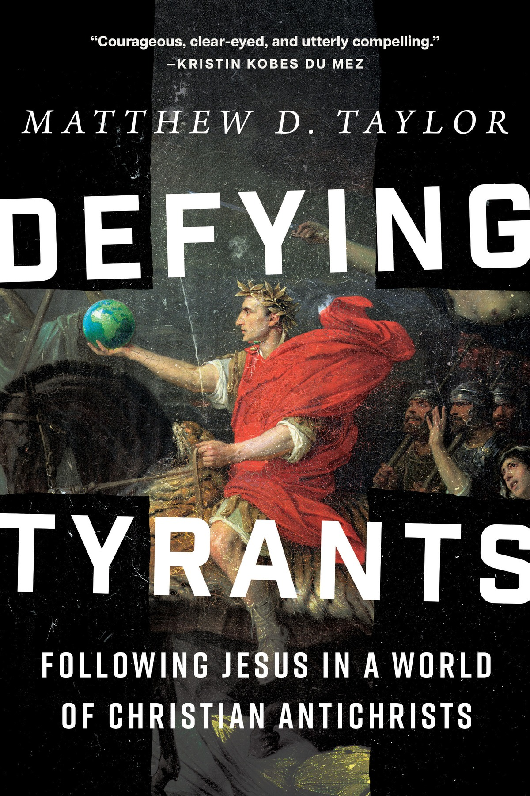

Free to be Faithful
Institute for Christian Studies

Defying
Tyrants
Following Jesus in a World of Christian Antichrists
Thursday, October 8
7:00 PM ET · Online
Free
Register · f2bf.icscanada.edu/big-read